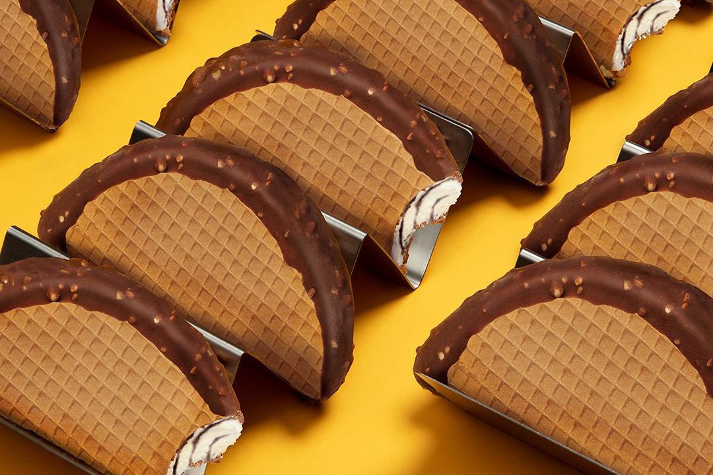

Choco Taco

Description
Running down the street chasing after the ice cream truck is peak nostalgia. And chances are, if you weren't a SpongeBob kid, you were a Choco Taco kid. Either way, it was always worth the sprint and spare scrunched up dollars in the end.
Ingredients
- ½ cup butter
- ½ cup packed dark brown sugar
- ½ cup egg whites
- 1½ tsp. vanilla extract
- ½ tsp. salt, plus a pinch
- ½ cup plus ⅛ cup flour
- ¼ cup water
- Vanilla fudge swirl ice cream
- 1 cup semisweet chocolate chips
- ⅓ cup coconut oil
- ½ cup chopped unsalted peanuts
Steps
- Stand a thin hard cover book up straight with the hard edge facing upwards. Drape a sheet of parchment across the book (this is what you will use to shape the shells). Line a plate with parchment paper.
- Heat butter in a small saucepan over medium-low until melted, 2–3 minutes. Transfer the melted butter to a bowl, then whisk in brown sugar, egg whites, vanilla to taste, and 1/2 tsp. salt. Add flour and water. Whisk until the batter is smooth and no clumps remain.
- Heat a non-stick skillet over medium. Pour about 1 tablespoon batter into the pan; spread into a thin layer with a spoon. Cook until browned on the bottom and bubbles begin to form on top, 1-2 minutes. Flip and cook until browned on other side, 1–2 minutes more. Remove from pan and immediately drape over parchment-lined book, pressing to help form that taco shell shape. Transfer to a parchment-lined plate and repeat with remaining batter. Let cool completely before filling. Alternatively, preheat a waffle cone maker according to manufacturer's instructions. Pour batter into the preheated waffle maker and cook according to instructions. Remove from pan and immediately drape across the parchment-lined book. Let cool completely before filling.
- Remove ice cream from the freezer and let soften for about 5 minutes.
- Meanwhile, combine chocolate chips and coconut oil in a microwave-safe bowl; microwave in 30-second intervals, mixing well between each, until mixture is melted and smooth, 1 to 2 minutes. Stir in chopped peanuts.
- Carefully fill the taco shells with the ice cream, pressing down gently to evenly distribute the ice cream to the edges. Repeat with the remaining taco shells. Place back on the parchment-lined plate.
- Dip the top of each ice cream taco in the peanut-chocolate mixture to completely coat the exposed ice cream. Return to the parchment-lined plate. Repeat with the remaining tacos until all are dipped. Once chocolate has hardened, carefully place Choco Tacos in a sealable container or bag and return to freezer.